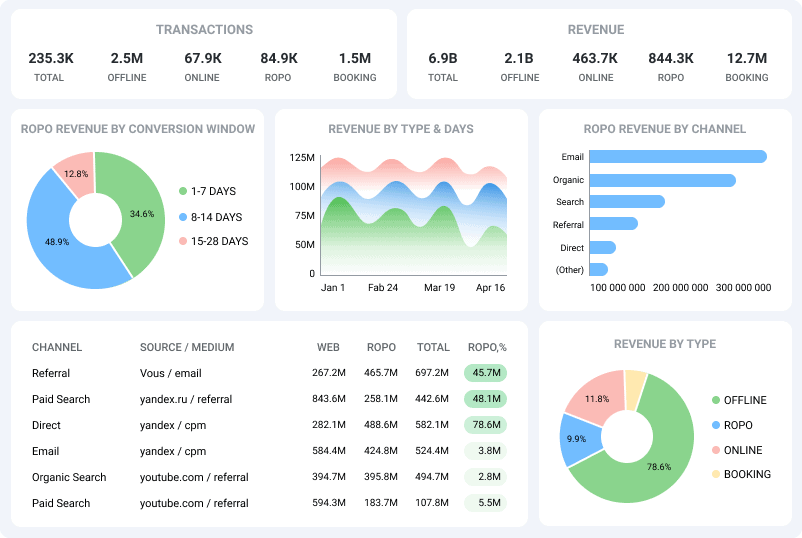
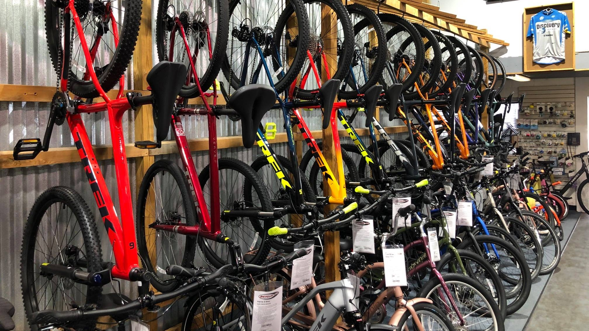

COVID-19 Data Exploration
The dataset was too large to work with in Excel, so I used SQL to clean, filter and explore it.
View Project
Data and BI analyst with five years of Python experience, turning raw data into clear insight with SQL, Excel, Power BI, Tableau and R. Previously a BI Analyst and Integration Developer, with a BCom Honours in Economics and certifications from Google, IBM and Microsoft. I take ownership, ask good questions and happily get my hands dirty. I also believe SQL should be South Africa's 12th official language. Based in South Africa and open to international remote roles.
BCom Honours (Economics) and BCom (Economics), UNISA.
The dataset was too large to work with in Excel, so I used SQL to clean, filter and explore it.
View ProjectExtracted the Nashville housing data, cleaned it and organised it in SQL, ready for visualisation.
View Project
ExcelA dashboard analysing the revenue of a company that sells multiple products, covering sales by store, sales by salesperson, top-selling products and total sales.
View Project
ExcelA dashboard built on a bike retailer's customer data, showing average income by gender per purchase, purchases by age group, average commute distance and cars owned per bike buyer.
View ProjectCombined twelve monthly sales files into one dataset, analysed it and made recommendations for each business question asked.
View ProjectUsed the YouTube API to collect data from my favourite channels and analysed what it revealed.
View Project Python · Web scraping
Python · Web scraping
Scraped the English Premier League website with Python libraries to collect data that I will load into a database and query.
View ProjectAnalysed three tables (Chicago crime data, Chicago public schools and census data) to answer a set of business questions.
View ProjectConnected to an IBM Db2 cloud database from Python using the service credentials, then queried the data I needed.
View ProjectUsed tidyverse, skimr and janitor to clean and analyse the data, and ggplot2 to visualise the findings.
View ProjectWorked with a large dataset where R made cleaning and manipulation easier, and ggplot2 gave me control over how the visuals were displayed.
View ProjectOpen to data analysis, BI and integration roles, including international remote positions. The quickest way to reach me is by email.